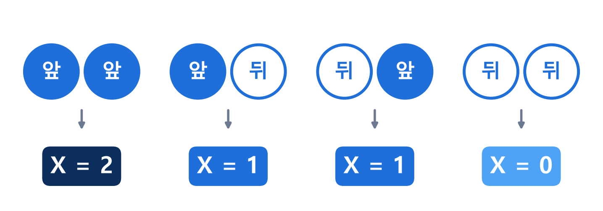
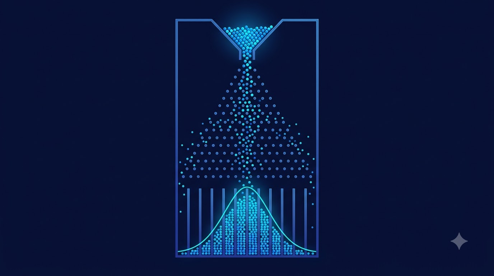
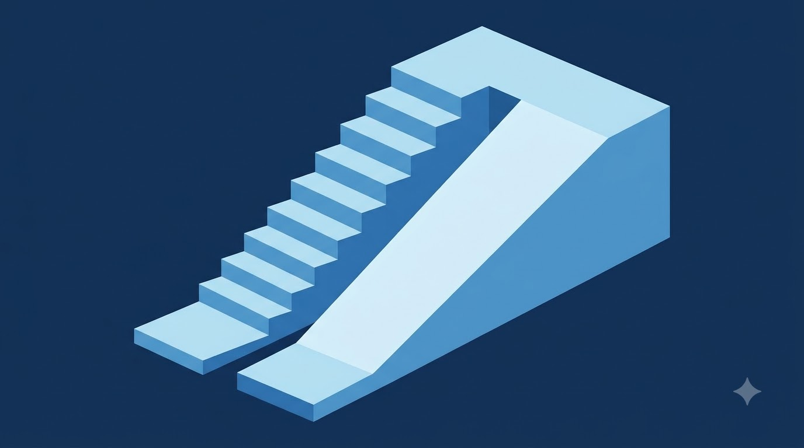

확률과 통계 | III. 통계
1강
확률변수와 확률분포
대학교 1학년 공학계열 · 교과서 81~86쪽
학습 목표
확률과 통계 | 1강 확률변수와 확률분포
확률변수 : 결과를 숫자로 바꾸는 규칙
동전 2개 던지기 → X = 앞면의 수

X는 우연에 따라 0, 1, 2 중 하나의 값을 취하는 변수
확률과 통계 | 1강 확률변수와 확률분포
비유 : 결과를 숫자로 바꾸는 점수판
- 동전 던지기 결과 → 점수판 숫자
- 앞면의 수 = 확률변수 X의 값
- 같은 사건을 숫자로 표현
이미지 : Google Flow로 생성한 AI 이미지
확률과 통계 | 1강 확률변수와 확률분포
확률분포 : 값별 확률의 분포
- 분포표 : 값과 확률의 짝
- 그래프 : 막대 높이 = 확률
- 확률질량함수 : P(X=x)
확률과 통계 | 1강 확률변수와 확률분포
비유 : 갈톤 보드
- 공 1개 = 시행 1회
- 칸별 공의 수 = 확률분포
- 공이 많을수록 종 모양에 접근

이미지 : Google Flow로 생성한 AI 이미지 · 직접 해 보기
확률과 통계 | 1강 확률변수와 확률분포
확률분포의 성질
성질 10 ≤ P(X=x) ≤ 1각 확률은 0 이상 1 이하
성질 2ΣP(X=x) = 1확률의 총합은 1
동전 예 : 1/4 + 1/2 + 1/4 = 1
확률과 통계 | 1강 확률변수와 확률분포
비유 : 계단과 경사로
- 계단 = 이산확률변수 (셀 수 있는 값)
- 경사로 = 연속확률변수 (끊김 없는 값)
- 한 점의 확률 = 0, 구간의 넓이 = 확률

이미지 : Google Flow로 생성한 AI 이미지
확률과 통계 | 1강 확률변수와 확률분포
연속확률변수 : 넓이 = 확률
- 구간 안의 모든 값 가능
- 예 : 부품 길이, 측정 오차
- 확률 = 곡선 아래 넓이
- 전체 넓이 = 1
확률과 통계 | 1강 확률변수와 확률분포
정리
확률분포
분포표 · 막대그래프 · 확률의 총합 = 1
확률과 통계 | 1강 확률변수와 확률분포 · 퀴즈 풀기